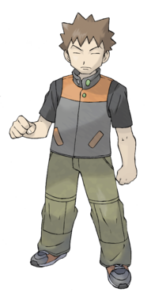
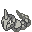

1. Brock

Brock é o primeiro líder de ginásio que os jogadores encontram em Pokémon Red e Blue. Conhecido como o “Homem de Pedra”, ele é o líder do Ginásio de Pewter e especializa-se em Pokémon do tipo pedra. Com uma personalidade séria e um espírito inabalável, Brock é um treinador dedicado que testa a habilidade dos aspirantes a mestres Pokémon. Sua estratégia de batalha sólida e seu conhecimento profundo sobre Pokémon fazem dele um adversário respeitável e um mentor valioso para aqueles que buscam crescer no mundo de Pokémon. Seu time de Pokémon cabeças-duras é:
| Ícone | Nome | Tipo(s) | Nível | Principal Fraqueza |
|---|---|---|---|---|
| Geodude | Pedra/Terra | 12 | Água e Grama | |
|  | Onix | Pedra/Terra | 14 | Água, Grama e Lutador |